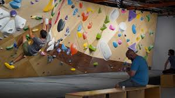
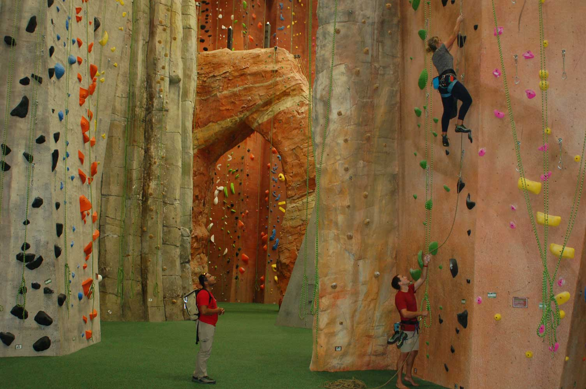

UofSC Climbing Wall
The UofSC climbing wall is open for top rope climbing and bouldering, with routes for both beginners and advanced climbers. Current students and campus recreation members must make a reservation.
The best way to prepare yourself for outdoor climbing is training indoors.
The UofSC climbing wall is open for top rope climbing and bouldering, with routes for both beginners and advanced climbers. Current students and campus recreation members must make a reservation.

Capital Climbing Cayce is open to the public with no appointment needed. Offering bouldering and other training options to the greater Columbia area, it features extensive walls and training tools for climbers of all levels.

projectROCK offers Indoor Sport Climbing, Lead Climbing, Bouldering, Rappelling, and classes. It’s a great facility for both youth and adult climbers to practice technique and strength.